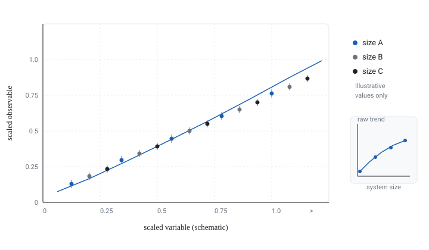

Project details
- Collaborators
- Work carried out in [Lab or Group] with [Advisor Name]. Names of additional collaborators available upon request.
- Timeline
- [Month Year] – present
- Status
- Ongoing
- Role
- [Role] — analysis design, pipeline implementation, and figure production.
- Research area
- [Research Area]; numerical study of [Broad Physical System].
Links: [Summary available upon request] | [Code available upon request] | [Poster available upon request] | [Slides available upon request]
Research question
How does [Observable] behave as the system size grows, and what exponent governs that behaviour? Finite systems distort the estimate: the smallest sizes carry corrections that are easy to mistake for the asymptotic answer. The project asks whether a consistent exponent can be extracted from the sizes available, and how large the residual systematic uncertainty is once those corrections are modelled explicitly.
Methods
- Designed a system-size series spanning [System Size] values, with matched parameters across sizes.
- Applied [Method 1] to obtain [Observable] per size, with error bars derived from independent samples.
- Fitted the size dependence with an explicit leading correction term, and compared against the uncorrected fit.
- Estimated the final uncertainty by resampling measurements, and supplemented it with the spread across fit windows.
Tools
- [Python] with [NumPy] and [SciPy] for the analysis pipeline.
- [C/C++ or Fortran] simulation code, built with [Build System].
- [MPI] and [SLURM] on a shared cluster for the production runs.
- [Git] for version control, with one configuration file per campaign.
My contribution
- Specified the size series and the parameter-matching scheme used across sizes.
- Implemented the resampling and fitting pipeline, including automated diagnostic checks on each fit.
- Produced the scaling-collapse figure and the supporting uncertainty tables.
- Documented the workflow so that a new campaign can be launched from a single configuration file.
Results (high level)
The size series is consistent with a single dominant exponent once the leading correction is included; omitting that correction shifts the estimate by substantially more than the statistical error. [Result summary] — the quantitative values are not published here while the work is with the group, but the qualitative behaviour and the method are summarized in the figure below.
What I can share now. The research question, the methods, the toolchain, and my own contribution — plus figures that contain no unpublished numerical values. Specific results, code, and data links are available upon request with my advisor's approval.
Figures

Project summary
A one-page project summary is provided as a PDF when it can be released. The file below is a placeholder that states the same thing.
Download project summary (PDF) Placeholder file — content available upon request